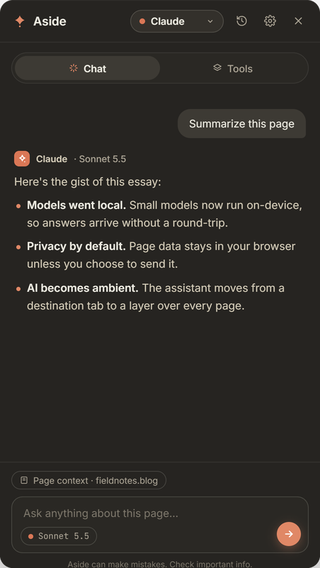
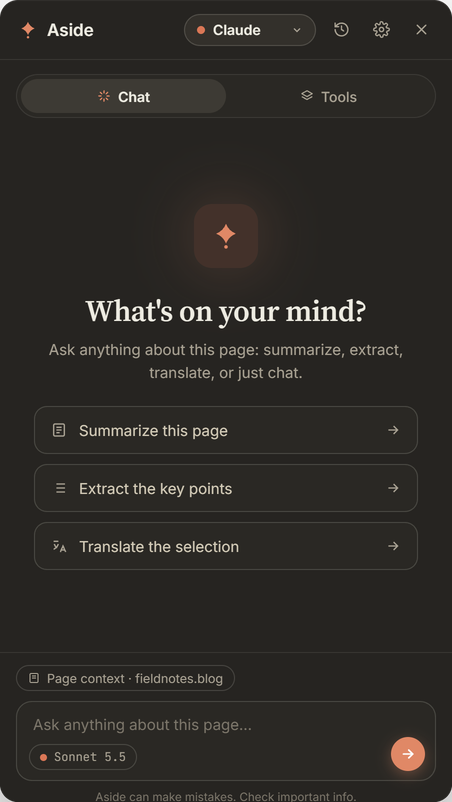
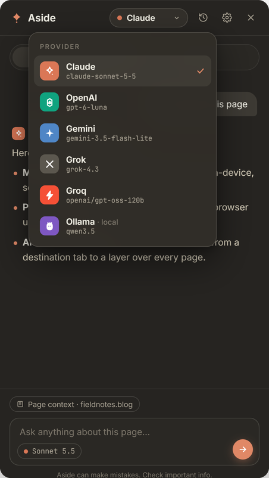
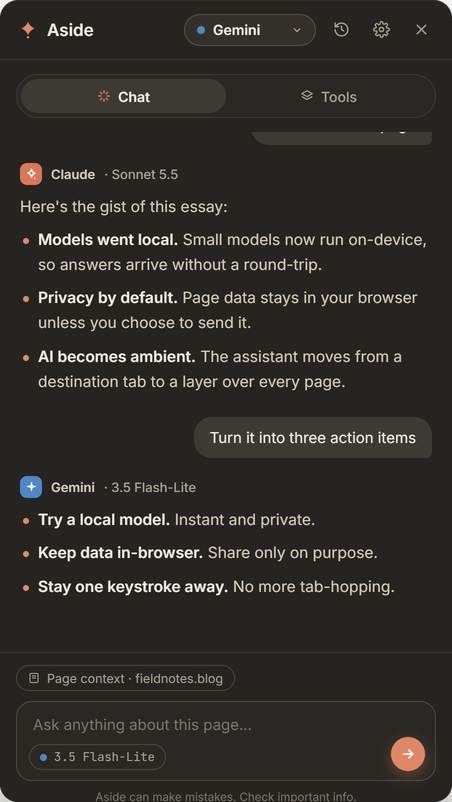

Side-by-side comparison
Pin two providers side-by-side and run the same prompt against both. Answers stream in parallel.
Aside puts Claude, ChatGPT, Gemini, Grok, Groq and local Ollama side-by-side in a sidebar that travels with you. Bring your own keys. Nothing leaves your browser.

Works with
Alt + A opens the sidebar, a page summary streams in seconds, and switching providers is one click.
Designed for people who ask the same prompt to three models before they trust an answer.
Pin two providers side-by-side and run the same prompt against both. Answers stream in parallel.
Add the API keys you already have. We never see them, never store them, never proxy them.
Every conversation stays in your browser storage. No accounts, no cloud sync, no analytics.
Save prompt snippets you actually use and fire them with one click.
Press Alt+A on any page. Context follows, sidebar stays out of the way.
The interface is English or Hebrew (full RTL); ask the model to reply in any of eight — English, Hebrew, Spanish, French, German, Chinese, Arabic, or Japanese.
Each provider ships with a fast default plus a few picks from cheap to flagship. The highlighted chip is the default.
Anthropic
GPT-6 family
xAI
GroqCloud
Self-hosted
Want a model that isn't listed yet? Choose Custom… and type any model id the provider supports.
Familiar look, no glaring chrome — built to live next to whatever you're reading.



Two short setups. The first installs the extension; the second gets you a free API key so you can actually use it.
No build step, no npm. Just download and load the folder. About 30 seconds.
Grab the slim aside.zip (~83 KB) and unzip it anywhere on your machine.
Paste chrome://extensions into the address bar and press Enter.
Top-right toggle. Without it, Chrome won't load an unpacked extension.
Click Load unpacked and select the unzipped aside folder (the one containing manifest.json).
Click the puzzle icon in the toolbar and pin Aside so it's one click away.
Chrome only auto-assigns shortcuts for Web Store extensions, so set it once by hand: open chrome://extensions/shortcuts, find Aside, click the box next to Toggle the AI sidebar, and press Alt + A. Now it opens on any page.
Groq runs OpenAI's open-weight GPT-OSS 120B at conversational speed and has a free tier — perfect for daily use. About 60 seconds.
A clean sign-in page — Google, GitHub, or email all work.
Open console.groq.com/keys →No credit card required. The free tier covers tens of thousands of requests per day.
Click Create API Key, name it something like Aside, and confirm.
Groq shows the key once. Copy it now — you can always create another later.
Open Aside → Settings → Groq, paste the key, save. The sidebar validates it live before storing.
Aside is 100% client-side. API keys live in chrome.storage.local — on your device only, never synced or uploaded anywhere. Requests go directly from your browser to the provider you chose. No telemetry, no analytics, no server in the middle.
Read the full Privacy PolicyThe extension is free and open source. You pay each AI provider directly for usage (or use a free tier — Groq and Gemini both offer one).
In chrome.storage.local — on your device only. They are never synced, uploaded, or sent to any server (there is no server we control). Conversation history is stored locally only, too.
Yes. Each provider ships with a sensible default, and you can switch model right from the composer (or in Settings → Model), e.g. Claude Sonnet 5.5, Opus 5.5, or Haiku 5.5. There's also a Custom field to type any model id the provider supports, so you're never stuck waiting for us to add a new one. Custom ids are saved per provider, so they reappear under Saved custom for one-click reuse.
Anthropic Claude, OpenAI ChatGPT, Google Gemini, xAI Grok, Groq, and self-hosted Ollama. Adding more is straightforward — see the repo.
The interface ships in English and Hebrew (full RTL). You can ask the model to reply in any of eight languages: English, Hebrew, Spanish, French, German, Chinese, Arabic, and Japanese.
Edge yes (Chromium-based). Firefox isn't packaged yet — contributions welcome.